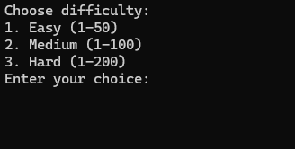
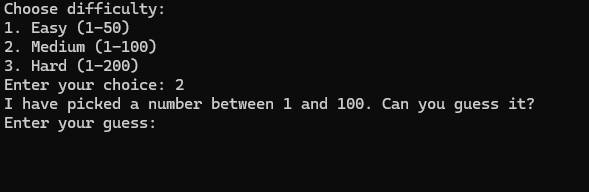
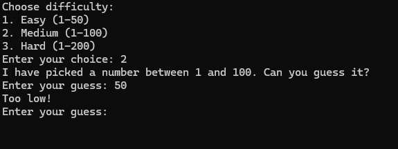

This number guessing game in C is a simple program where the user tries to
guess a randomly generated number within a specified range. The game generates
a random number and the player has to guess what it is by inputting their guesses.
After each guess, the program gives feedback on whether the guess is too high,
too low, or correct. The goal is for the player to guess the number in as few
attempts as possible. The idea for this game came from me wanting to create an
interactive and fun way to practice C programming concepts like loops,
conditionals, and user input handling.



Where the idea came from
The idea for this number guessing game came to me while watching a YouTube video on a similar topic,
but this time using Python. I was fascinated by how easily the game was implemented in Python,
and it got me thinking about how I could recreate the same game in C. I realized that while Python
is often seen as a beginner-friendly language due to its simplicity, C offers a deeper
understanding of how things work under the hood—especially when it comes to things like
random number generation, memory management, and user input handling.
What I Learned
Developing this number guessing game helped me strengthen my
understanding of fundamental concepts in C.
Here's what I learned while working on it:
- Random Number Generation: The game involves generating a random number, which taught me
how to use the rand() function in C, as well as how to properly seed it with srand()
to ensure different outcomes on each run. This was a crucial step in making the game dynamic and interesting.
- Loops and Conditionals: The game uses a while loop to keep asking the player for guesses until
they guess the correct number. Inside the loop, if statements check if the guess is too high, too low, or correct.
This reinforced my understanding of how loops and conditionals work in C, and how they can be combined for interactive programs.
- User Input Handling:I learned how to use scanf to read the user's input. Handling user input carefully is essential,
especially when you want to ensure valid data is entered. This game gave me practice in taking numeric input and validating it for the game logic.
- Functions: I chose to break the program into smaller functions like generateRandomNumber, getUserGuess, and provideFeedback.
This structure made the program more readable and easier to debug.
It also helped me practice how to design a program using multiple functions for better organization.
- Error Handling: In a real game, players might enter non-numeric input or make other mistakes.
Although this version of the game doesn't cover extensive error handling, the basic concept of ensuring valid
input was something I learned while developing this program. It taught me how to manage situations where input
might not be what I expected.
- Basic Game Logic: Beyond just using C syntax and functions, writing this game taught me how
to think logically about how the game should work—how to handle guesses, when to give feedback,
and when to end the game. This kind of logic is essential in game development and in programming in general.
Overall, this number guessing game was a great exercise in practicing basic C programming concepts.
It introduced me to key elements like random number generation, input handling, loops, and conditionals.
If you're a beginner, creating a game like this can help you apply your knowledge in a fun and interactive
way while learning how to organize your code and handle user interactions effectively.
You can find the full code to this project by clicking HERE